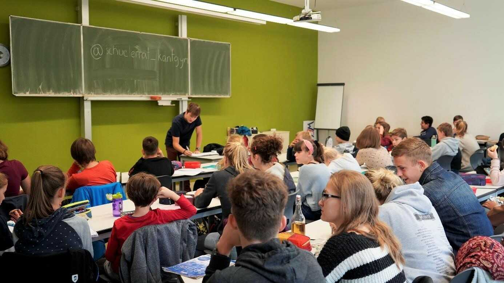

Allgemein
Allgemein
Wer sind wir?
Wir sind der Kantrat. Unser Gremium wird von über 60 Klassen- &
Kurssprecher*innen, sowie deren Stellvertreter*innen gebildet.
Zusammen versuchen wir unsere Schülerschaft zu vertreten und
einen Raum, um Demokratie zu erleben zu bieten. Wir sind Eure
Ansprechpartner*innen für Probleme mit Lehrer*innen,
Mitschüler*innen oder anderen Anliegen aber auch offen für
Einwürfe und Ideen, wie unser Schulalltag schöner gestaltet
werden kann. Dafür findet ein wöchentliches Treffen statt, in
dem diskutiert, zugehört und mitgestaltet werden kann. Durch
diese Art der Kommunikation haben wir es schon geschafft einen
Klassenarbeitsplan für die Sek I, zur Entlastung der
Schüler*innen, einzuführen, den Schulclub zu eröffnen und die
Projekte „Schüler helfen Schüler“, sowie die Bildung von
Arbeitsgruppen zu etablieren. Des Weiteren zeigen wir unser
Engagement in Aktionen wie der Müllsammelaktion auf dem
Schützplatz oder dem Gedenken vom 09.11 an den Holocaust. Wir
versuchen uns dabei immer weiter zu entwickeln und selbst zu
reflektieren, was zum Beispiel bei den jährlichen Seminarfahrten
umgesetzt wird. Dort können wir uns mit aktuellen Thematiken
intensiver auseinandersetzen und das Zusammenarbeiten stärken.
Doch damit das alles auch umgesetzt werden kann, werden zum
Beginn jedes Schuljahres die Klassen- & Kurssprecher*innen,
sowie der Vorstand gewählt. Dieser besteht aus eine*r
Schülersprecher*in, sein*er Vertreter*in , den
Schulkonferenzmitgliedern und den StadtSchülerRats-Delegierten.
Der Vorstand ist dafür zuständig Eure Interessen vor der
Schulkonferenz und dem Stadtschülerrat zu vertreten. Unterstützt
steht uns dabei unser*e Vertrauenslehrer*in zur Seite.
Doch was genau ist die Schulkonferenz?
In der Schulkonferenz trifft sich die Schulleitung mit der
gewählten Eltern- & Schüler*innenvertretung. Diese
Vertreter*innen werden auch Schulkonferenzmitglieder*innen
genannt. Zusammen wird dann über zukünftige Schulentscheidungen
und aktuelle schulinterne Problematiken diskutiert und
abgestimmt. Die Schulkonferenz ist damit das höchste Gremium der
Schule.
Und was ist der Stadtschülerrat?
In dem Stadtschülerrat treffen sich all die gewählten
SchadtSchülerRats-Deligiert*innen. Diese kommen von den
verschiedensten Schularten aus ganz Leipzig zusammen. Bei den
vierteljährigen Treffen findet ein Austausch über allgemeine,
relevante Probleme an Schulen statt. Genauso wird der Fokus aber
auch auf die Entwicklung von Lösungsansätzen gesetzt.
